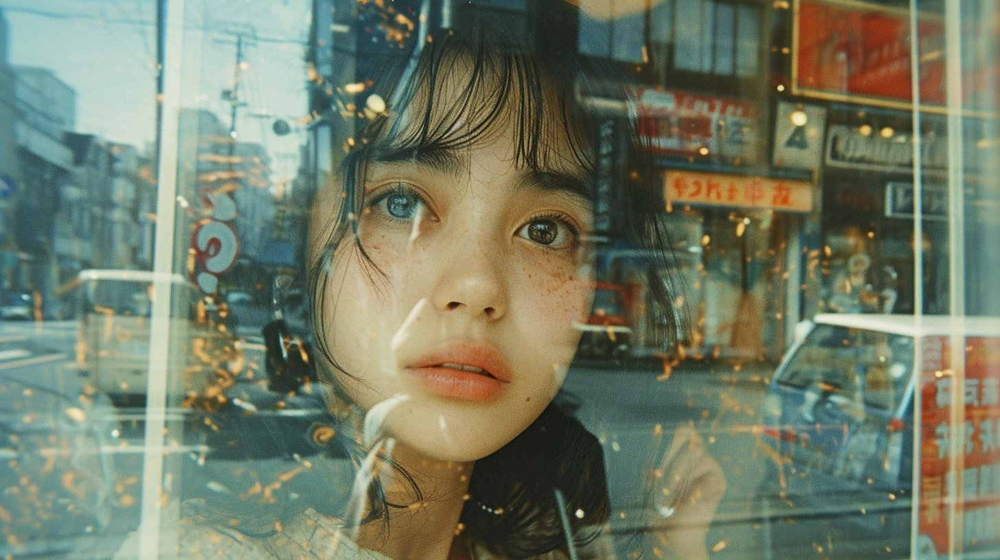
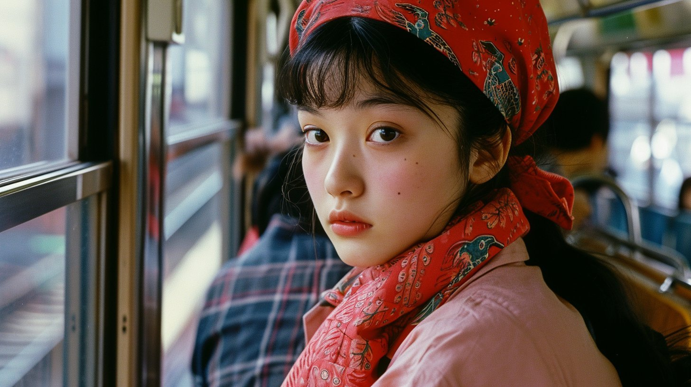

Nineties Japan Snapshots
Warm 1990s Japanese snapshots: a profile by a window and a girl on a neon street, from a four-word Midjourney v6 prompt.
| Creator | 木内翔大＠SHIFT AI代表「日本をAI先進国に」𝕏 @shota7180 |
|---|---|
| Platform | X |
| Model | Midjourney v6 |
| Likes | 407 |
| Posted | 2024-01-19 |
| Visual style | Film / retro |
| Regional vibe | Japanese |
| Genre | Daily life |
| Mood | Lonely / melancholy |
Prompt · from the author's reply
[quick snap, photo, japan, 1990s]